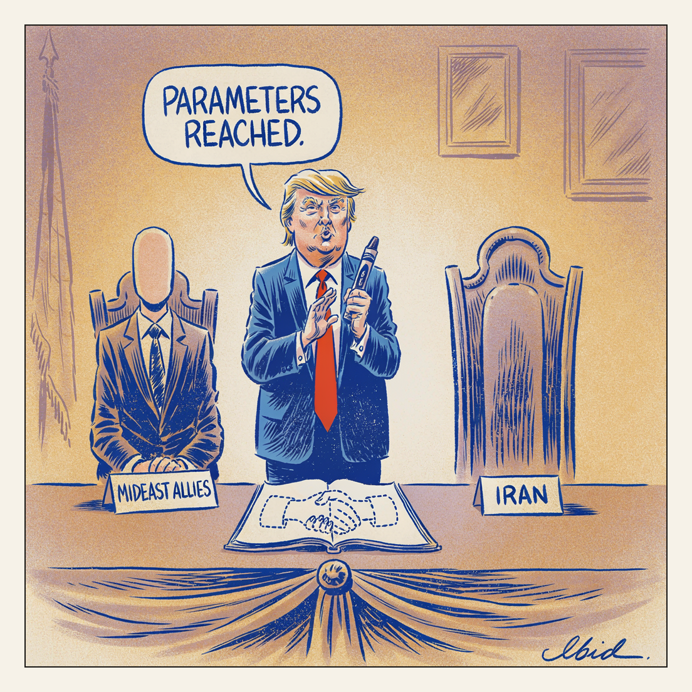

Strikes resume outside the lines.
Outlines

President Trump said Mideast allies have reached the outlines of a deal to end the Iran war and that the US will halt new strikes. AP reported the announcement came from Trump rather than from any signatory, with the pause conditioned on "parameters reached" rather than a signed agreement. The allies credited were not named, and Iran was not reported as a party to the outlines.